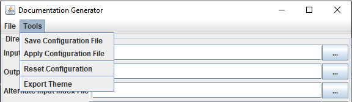
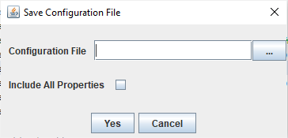

Home
Categories
Dictionary
Download
Project Details
Changes Log
What Links Here
How To
Syntax
FAQ
License
Saving a configuration file
The "Tools" menu allows to generate a configuration file with the current state of the GUI interface options.
The generation will produce a configuration file with the appropriate options considering the state of the GUI and the state of the "Include All Properties" checkbox.

Overview
The dialog which appear after clicking has two options:- By default only the properties whose values are different from their default values will be included in the generated configuration file[1]
For example, the default value for the Check HTTP Links option is
true, which means that this option will only be present in the file if the checkbox is not selected in the GUI - By selecting the "Include All Properties", the values for all properties will be included, regardless of their value

The generation will produce a configuration file with the appropriate options considering the state of the GUI and the state of the "Include All Properties" checkbox.
Examples
The following is the result of saving a configuration file with "Include All Properties" no selected, and with only the "Check HTTP Links" checkbox unselected:checkHTTPLinks=falseThe following file is the result of saving a configuration file with "Include All Properties" selected, and all at the default state: confall
Notes
- ^ For example, the default value for the Check HTTP Links option is
true, which means that this option will only be present in the file if the checkbox is not selected in the GUI
See also
- GUI Generation options: This article presents the generation options of the GUI
- Configuration file: It is possible to define an optional property / value configuration file when starting the application (using the graphical UI or the command line)
×

Categories: General | Gui